Handheld Wordle (Jordle)
Joshua Ashvil's Work Portfolio
Projects

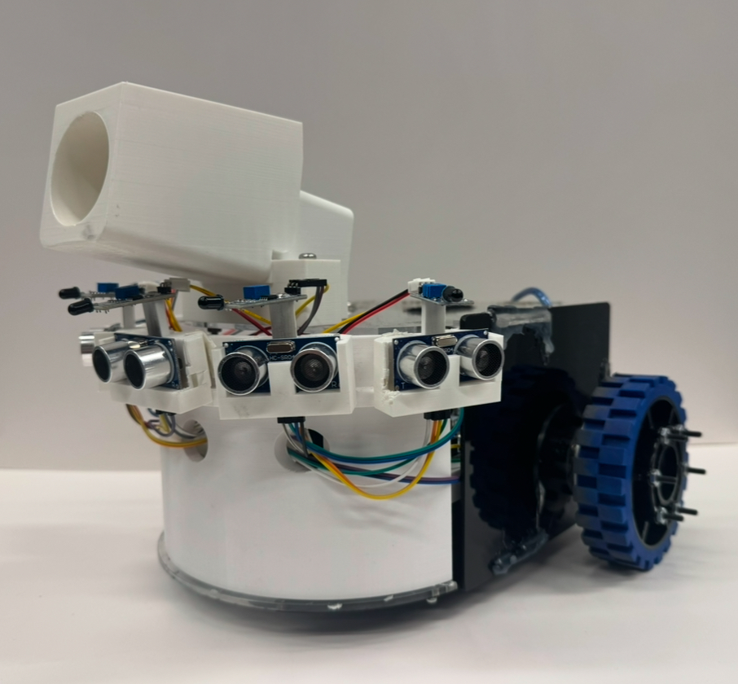
Autonomous Mobile Robot
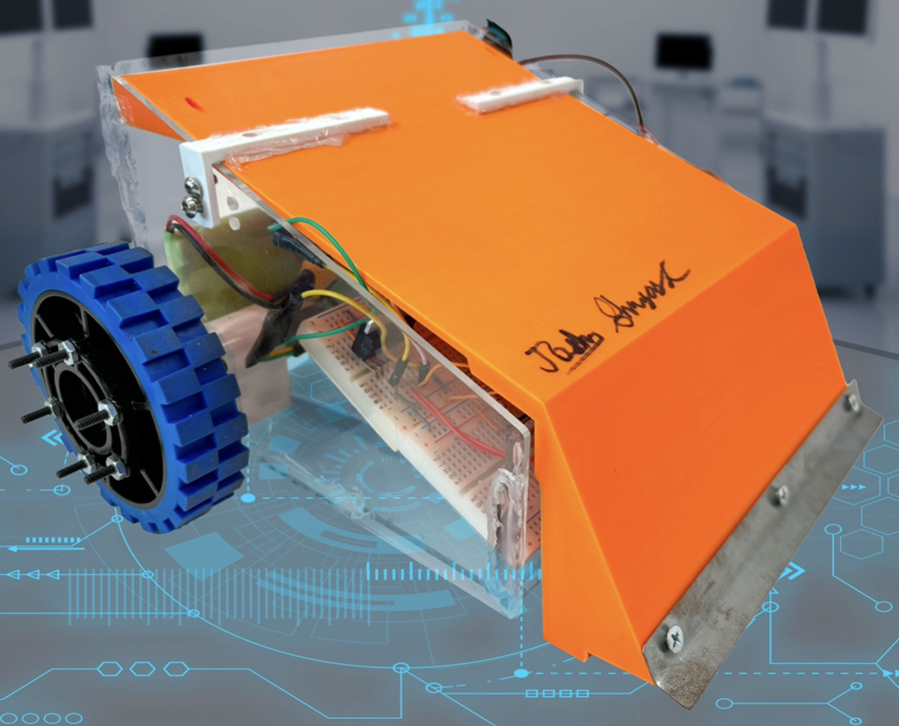
Sumo Robot
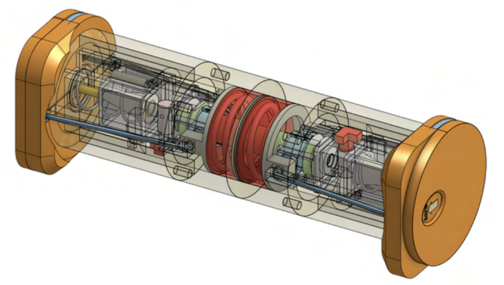
The Nepipen
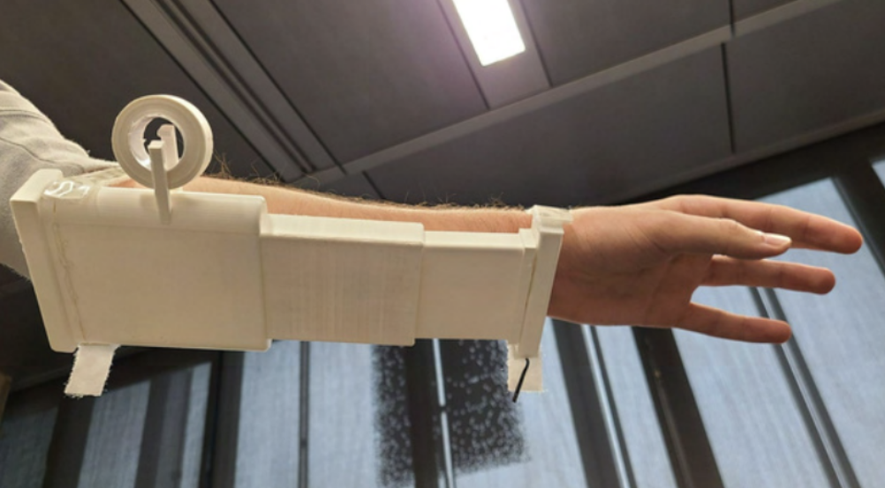
The BraceYourself
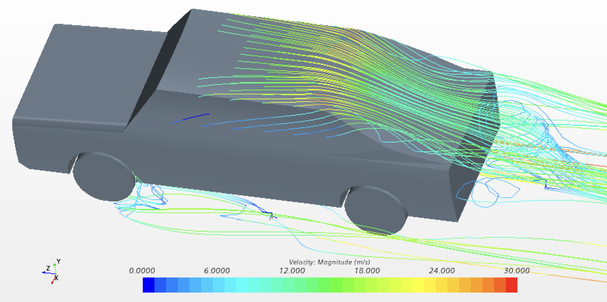
Improving Pickup Truck Aerodynamics
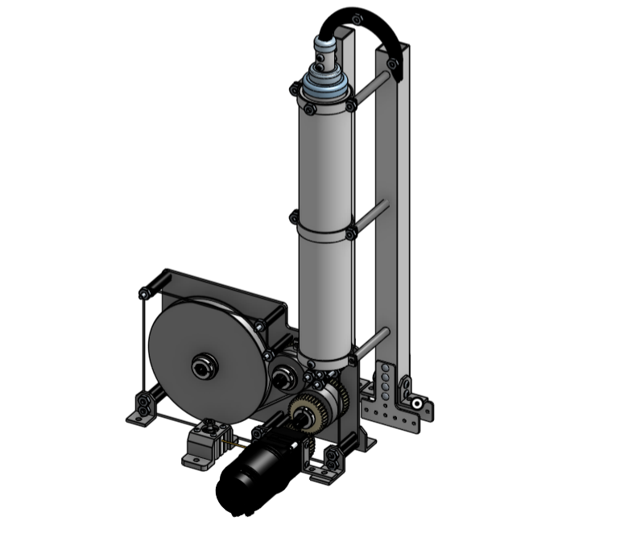
Telescopic Arm Climbing Device
Handheld Wordle (Jordle)
The Problem:
Wordle is a popular game developed by the New York Times that challenges players to guess a 5-letter word in 6 tries or less. As the user guesses words, clues are left on whether letters are placed correctly (the game rules are attached in the image below). Unfortunately, only one word is released daily, so if a user wants to play again, they have to wait until the next day. To solve this, I created a handheld Wordle Game, Jordle, allowing users to play as many times as they want.
Skills Used: C++ · Arduino IDE · Laser Cutting · Computer-Aided Design (CAD) · 3D Printing · Electronics · Design
Wordle Rules:
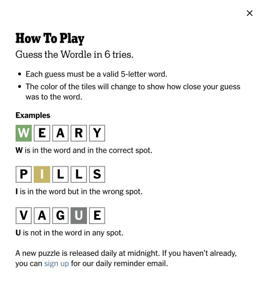How It Works:
An Arduino Nano was used to power this device, and it is connected to a single joystick, pushbutton, 0.98-inch OLED Display, and power switch. The circuitry was first modeled in simulation software, where the game code I created was initially tested. The game code follows the same logic as the original (selecting a random 5-letter word each time it is turned on), but with the color limitations of the OLED display a green letter indicator was changed to a filled rectangle around the letter, and a yellow letter indicator was changed to a hollow rectangle. The user creates words using the joystick to scroll through the alphabet and uses the red push button to enter the word. In addition, when the user holds down the joystick, they get to see what letters they haven’t tried yet. Lastly, this game also features a 2-player mode, where users can compete against one another to see who guesses the word faster. Once the code was completed in simulation, a CAD model for the housing was created and manufactured using 3D printing and laser cutting, the circuit was wired and mounted, and the code was uploaded to the Arduino.
Circuit Diagram:
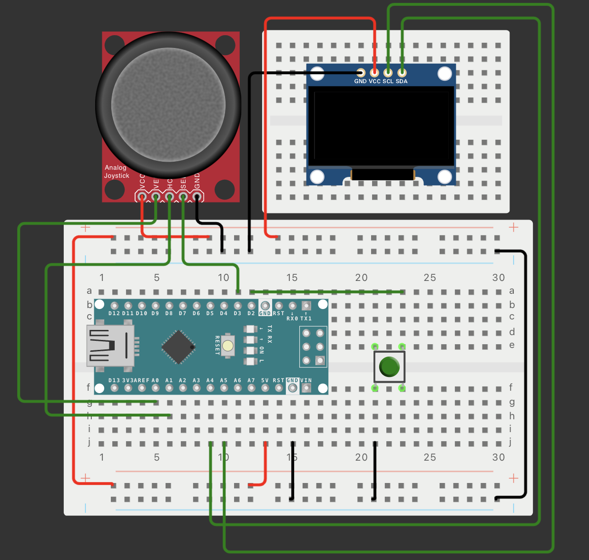CAD Model:
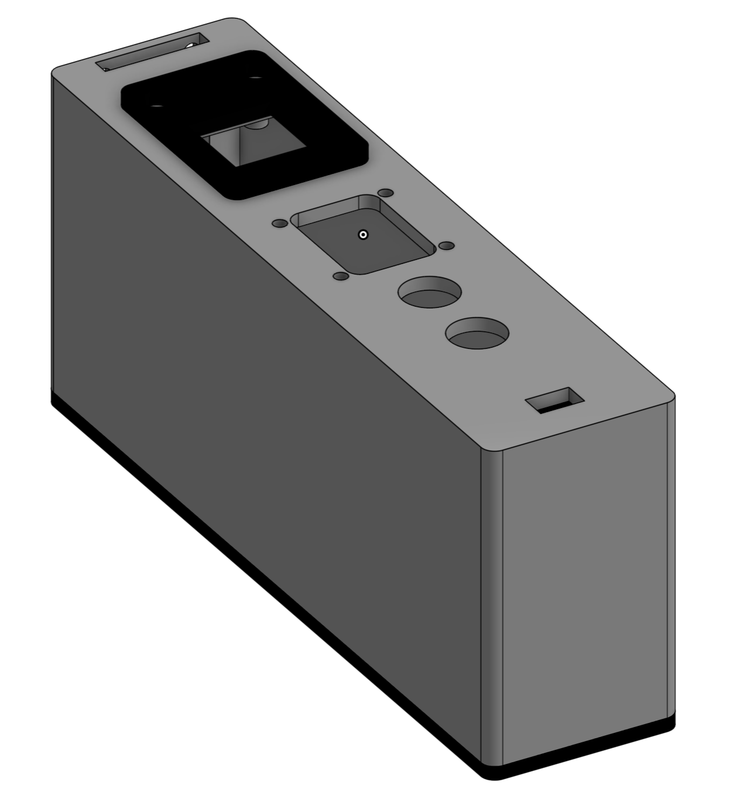Challenges:
The biggest challenge of this project was dealing with the limited memory of the Arduino Nano. Since the dictionary of 5-word English letters contains well over 3500 strings, the Arduino quickly ran out of memory when it was loaded in as an array. At first, I tried using an Arduino micro SD card module to store the array, but that too used up too much memory. Thus, I encoded the dictionary to eliminate the use of the large 8-bit ASCII characters (with the help of sources that have achieved this before) and reduced the size of the array by over 50 percent. The second challenge of this project was mounting the electronic components to my housing. The OLED display was originally supposed to be mounted using four M2 bolts, but this broke the screen due to its fragility. Thus, I used a strong adhesive instead which fixed this issue. Additionally, the joystick top was too large and kept getting caught on the housing, so I 3D printed my own joystick top modeled after a Nintendo Switch JoyCon joystick, and this worked much better.
Result:
The resulting game was well-received by those who played it, and users responded well to the portability and simplicity of the device. Today, I am using this game as a way to pass the time on my commute to school! A video of me playing the game can be found below:
Game Walkthrough:
Autonomous Mobile Robot
The Problem:
My team was tasked with creating an autonomous robot for the 2024 Cooper Union Robot Tank Battle competition. The competition's primary goal is to accumulate points by launching 40 mm ping-pong balls at the opponent’s home base or robot. The home bases and robots are equipped with infrared (IR) light markers for detection. Additionally, robots must navigate an arena with randomly placed obstacles, and be able to return to its starting position (home base).
Skills Used: C++ · Arduino IDE · Laser Cutting · Computer-Aided Design (CAD) · 3D Printing · Electronics · Design · Manufacturing
How It Works:
Attached below is the CAD model of the robot, which has many subassemblies that help it come together. The first is the motor subassembly, which features two 12V 41-rpm motors attached to a 4-inch wheel using a custom adapter machined out of aluminum. The front wheel is a 1.5-inch diameter ball castor. These motors are attached to a chassis, which has a puzzle-piece-like structure of ⅛’’ acrylic plates and a 3D-printed front. To shoot the ping pong ball, a 12V linear solenoid is mounted on the top of the robot to perform this task with ease. For the electronics, an Arduino Mega is used as the microcontroller, alongside an L298N motor driver and an array of 5 Ultrasonic and 5 IR sensors. The robot is powered by a 12V battery with a kill switch. The array of 5 ultrasonic and IR sensors allowed us to successfully implement a state-machine program that successfully avoided all obstacles and had a wide range of IR light detection. When the middle 3 IR lights detect the light, the robot shoots and turns around. When the side IR sensors detected the light, the robot would turn and move back to align its shooter with the IR light before shooting.
Robot CAD Model:
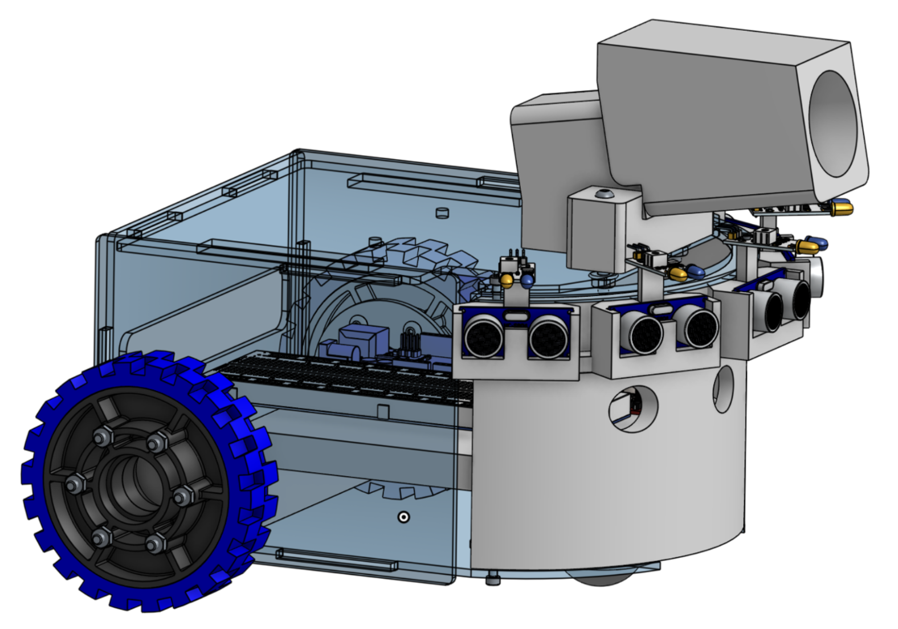Chassis Subassembly:
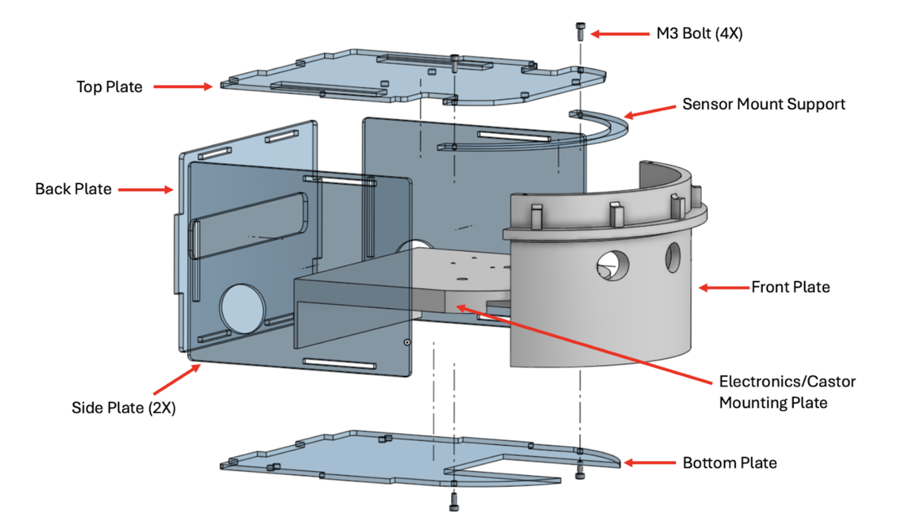Sensor Subassembly:
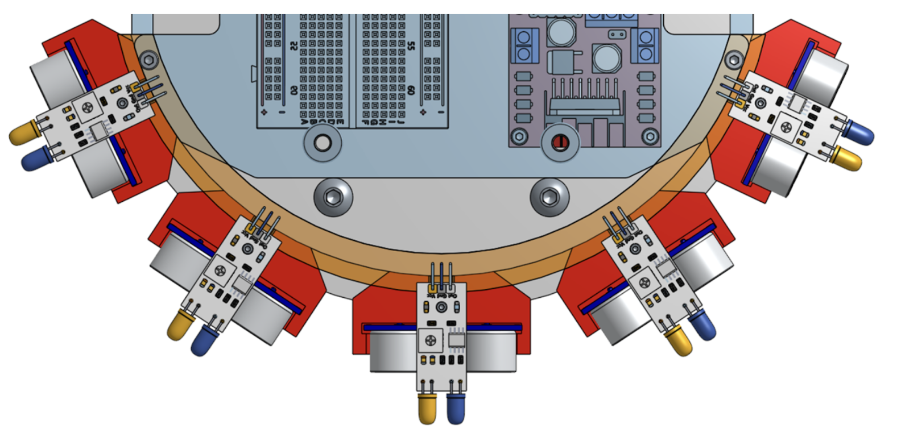Solenoid Subassembly:
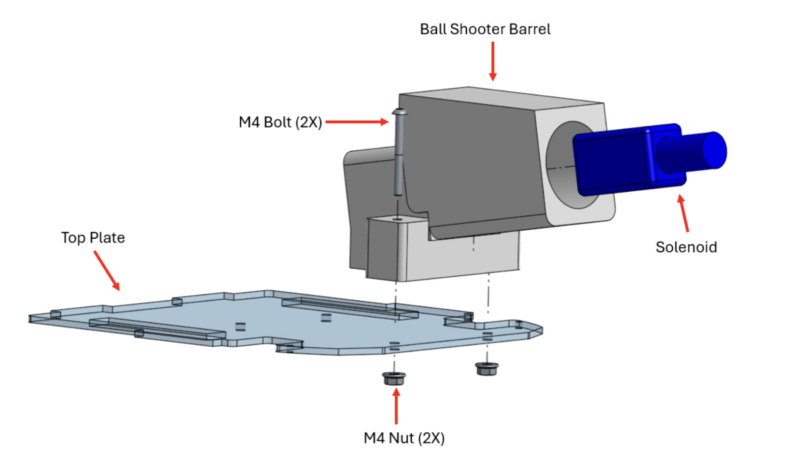Circuit Diagram:
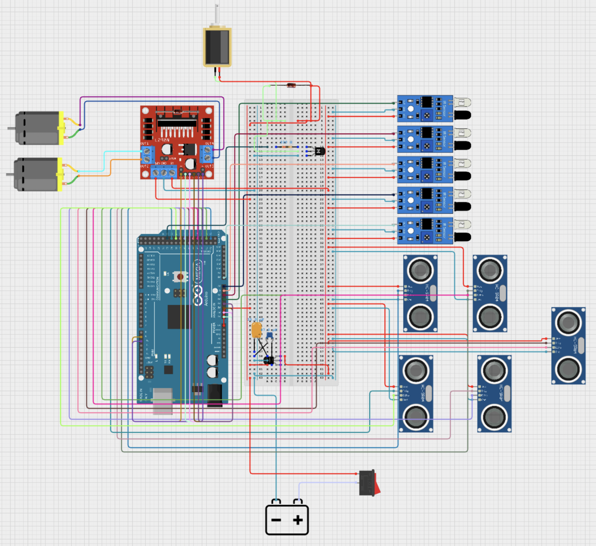Challenges:
In the building process, we encountered an issue with our Arduino resetting over and over. This happened because when transitioning from moving forward to backward, the current change was so much in the motors that the Arduino reset. In addition, the motor wires were tangled into the motor driver signal wires, disrupting the Arduino. We fixed these issues, replaced our Arduino as well as many of the other components, and rewired the whole robot, ensuring it would work properly. We also had issues with our voltage regulator getting extremely hot, well over proper operating temperatures. To fix this issue, we bought heatsinks and put one on the voltage regulator.
Result:
In the competition, the robot was very successful. This robot was the only robot to complete all four class achievements: shooting another robot, traversing halfway through the arena and returning to home base without any collisions, shooting the enemy home base, and completing an entire round without any collisions. This highlighted the success of obstacle avoidance, IR detection, and ping-pong ball shooter. The robot won 3 rounds and tied 2 rounds, becoming the 2024 competition winner.
Completed Robot:
Robot Test Run:
Sumo Robot
The Problem:
My team was tasked with creating an autonomous sumo robot that could push another robot out of a 3x3 ft enclosed area. The field is made out of a 3x3 ft sheet of black neoprene rubber, with all the edges being white. The edges are a different color so robots could use provided IR sensors to sense them and move back into the field. The robot budget was 200 dollars, and teams were expected to use an ATMega328P microcontroller, SNAP programmer, IR sensors, and L298N motor driver.
Skills Used: C++ · Laser Cutting · Computer-Aided Design (CAD) · 3D Printing · Electronics · Design · Manufacturing · Microchip Studio
How It Works:
Attached below is the CAD model of the robot, which has many subassemblies that help it come together. The first is the motor subassembly, which features two 12V 41-rpm motors attached to a 4-inch wheel using a custom adapter machined out of aluminum. These motors are attached to a chassis, which has a puzzle-piece-like structure of ⅛’’ acrylic plates and a 3D-printed top lid. The front of the lid has a piece of 1/16’’ aluminum mounted to it as a wedge to get up under other robots. For the electronics, the robot is powered by a 12V battery with a kill switch and uses an L298N motor driver to move the motors, and an ATMega328P as a microcontroller. The microcontroller used a SNAP programmer to have a program written to it, that simply used the two IR sensors to detect if the edge was found, and if so, maneuver back into the field.
Robot CAD Model:
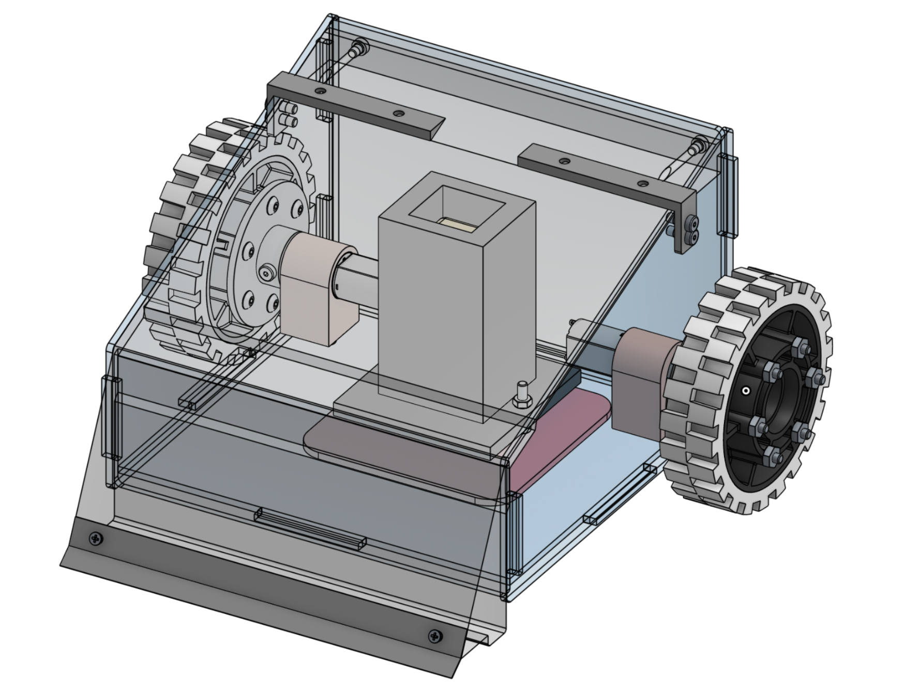Motor Subassembly:
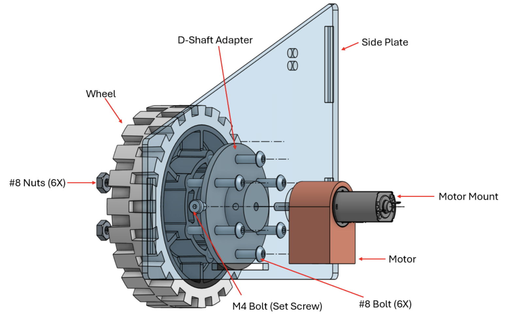Chassis Subassembly:
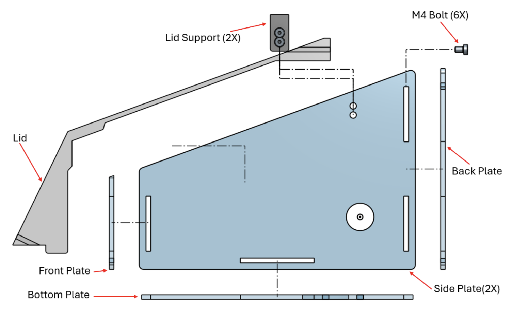Circuit Diagram:
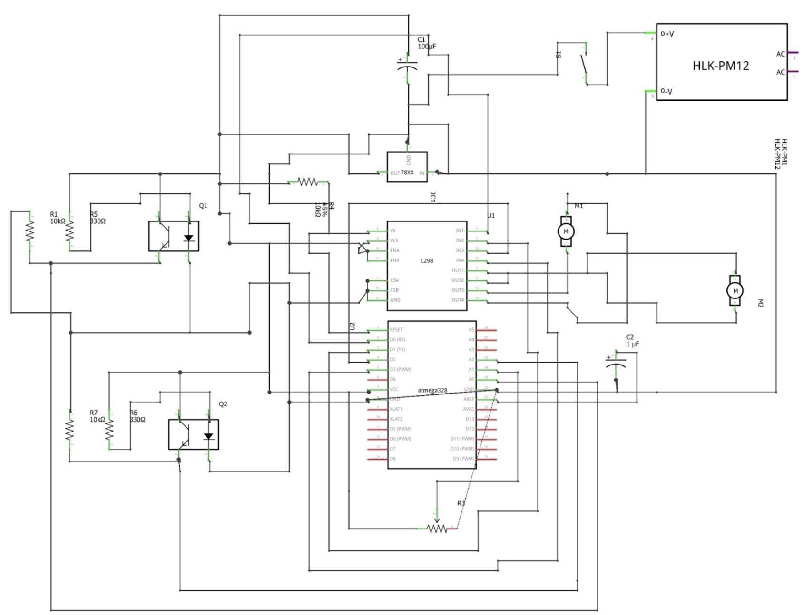Challenges:
The main challenges of this project arise from the electronics. We were given an ATMega328P microcontroller with a SNAP Programmer, which was very unintuitive to use compared to an Arduino, so there was a lot of troubleshooting involved in getting the robot’s code to upload properly. In addition, the IR sensors we were using were very poor and required constant recalibration when room environments changed. In the future, we would implement a better wire management system to prevent potentially dangerous voltage errors (which destroyed one of our SNAP programmers), as well as use less sensitive IR sensors.
Results:
In the competition, the robot was very successful. It was able to win two of the three rounds it participated in and demonstrated the ability to stay inside the field unless pushed out. What caused it to lose one round was the wedge not performing as well as intended and the motors not being powerful enough to push the other robot out of the ring. These are fixes my team would make to improve the robot in the future.
Completed Robot:
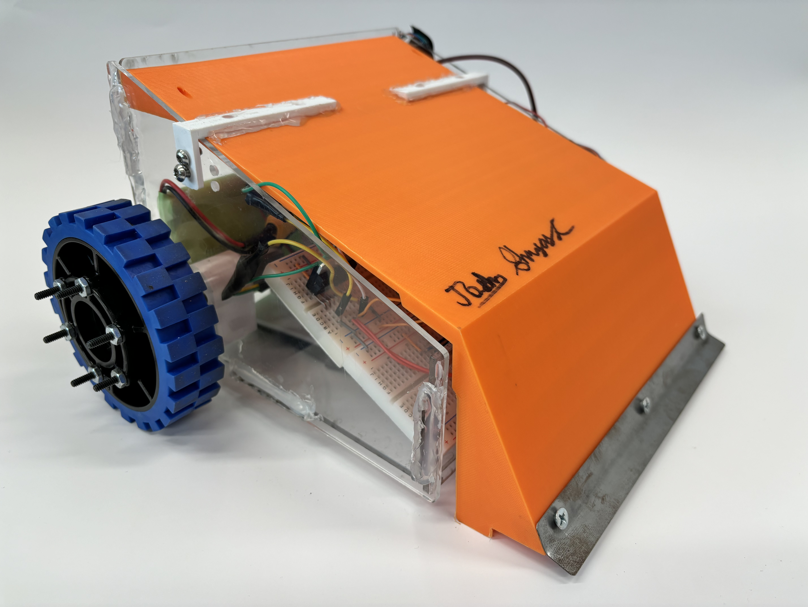Robot Battles:
The Nepipen
The Problem:
The Cooper Union Invention Factory is a program where students (in teams of 2) are given 6 weeks and a 2000-dollar budget to create a new invention and submit a provisional patent application for it. In the end, inventions are presented to esteemed judges who decide on the first and second-place winners. My teammate brought up a crucial problem that effects people worldwide, including herself. This issue is called anaphylactic shock, a severe, possibly fatal allergic reaction that effects 1 in 50 Americans. Currently, doctors prescribe at-risk patients epinephrine autoinjectors (or Epipens) to deal with this issue. Two of these autoinjectors are prescribed at a time, as sometimes 1 dose of epinephrine is not enough to stop anaphylactic shock. However, 82% of users do not carry both, and 36% of anaphylaxis cases require a second dose. This is due to most autoinjectors being bulky and cumbersome. In addition, many are unintuitive to use, and can end up causing people unfamiliar with them to injure themselves.
Skills Used: Rapid Prototyping · Computer-Aided Design (CAD) · 3D Printing · Design · Manufacturing
How It Works:
Our invention, the Nepipen, is a more compact and intuitive epinephrine autoinjector, that employs a two sided single bellow syringe vile to administer two doses of epinephrine. The invention measures 1 inch in width and 5.5 inches in length, which is significantly smaller than the traditional Epipen, which in its case of 2 measures 2.5 inches in width and 6.5 inches in length. Our design works in a few simple steps. First, users slide off the safety cap on one of the sides. Then, they take the outer ring and press it on their outer thigh (tradition Epipens require a hard stab of the needle which leads to many injuries). This ejects a high force spring that latches onto the vial and ejects the needle with over 30 pounds of force, and squeezes the bellows which ejects the drugs. Then, once the drug is ejected, the spring unlatches, and a smaller, lower force spring pushes the needle back into the outer casing. Then, if the user expriiences anaphylactic shock again shortly after, the same steps can be repeated on the other side. During this whole process, since one vial is used, it is important to prevent contaminants from entering the shared vial at all times. This is why we employed a simpel luer lock mechanism on either side, which opens when the drug is being injected, and closes immediately after.
CAD Model:
Size Comparison To Standard Epipen:
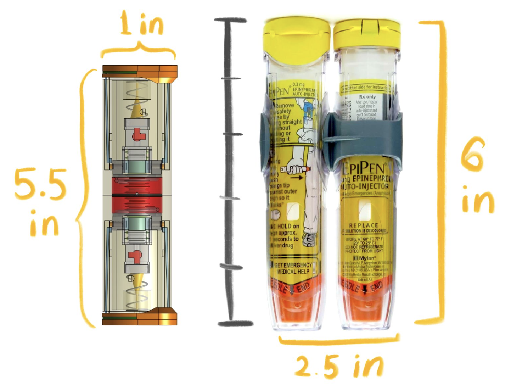Ejection Demonstration:
First Prototype:

Challenges:
The biggest challenge with this device was manufacturing. The main manufacturing methods we had access to were PLA and Resin 3D printers, which have their limitations in terms of dimensional accuracy. Thus, with a lot of small intricate moving parts, it was difficult to manufacture this device and have it perform perfectly. However, we were able to create a working prototype that ejected properly, with most of our parts being 3D printed and secured together using epoxy resin.
Result:
My partner and I won second prize in the Invention Factory for inventing the Nepipen, and filed a provisional patent for the device. We decided to pursue grants for this device and won a few of them. The first were the VentureWell E-Team Program Stage 1 and 2 grants, which included 25000 dollars in total funds, invitations to the VentureWell workshops, and connections to their alumni network. In addition, we won the Maroon and Gold grant, which included 5000 dollars in funding and mentorship from program representatives. With these funds, we are currently in the process of filing a nonprovisional patent, and possibly expand the scope of the invention.
Nepipen Team Video:
The BraceYourself
The Problem:
Those who participate in high-risk sports such as hiking and skiing run the risk of severely injuring themselves. In addition, they may be in remote environments alone, far away from any near medical help. When serious limb injuries occur, it is important to put on a splint to prevent the injury from worsening. However, most individuals don’t carry splints around with them because they take up too much space and can be difficult to put on.
Skills Used: Rapid Prototyping · Computer-Aided Design (CAD) · 3D Printing · Design
How It Works:
The BraceYourself is a collapsable limb splint that can be worn on injured arms or ankles. It is made out of 3D-printed PLA plastic and telescopes in and out to adjust to different limb lengths. When the splint is fully collapsed, it has a total length of 5 inches and extends to approximately 14 inches. The splint is secured with two velcro straps, that can be secured by the user easily, even with one hand. In addition, there is a medical tape holder on the device if the user wants to optionally provide even more support to the injured area by tightly wrapping the tape around the affected area.
CAD Model (extended):
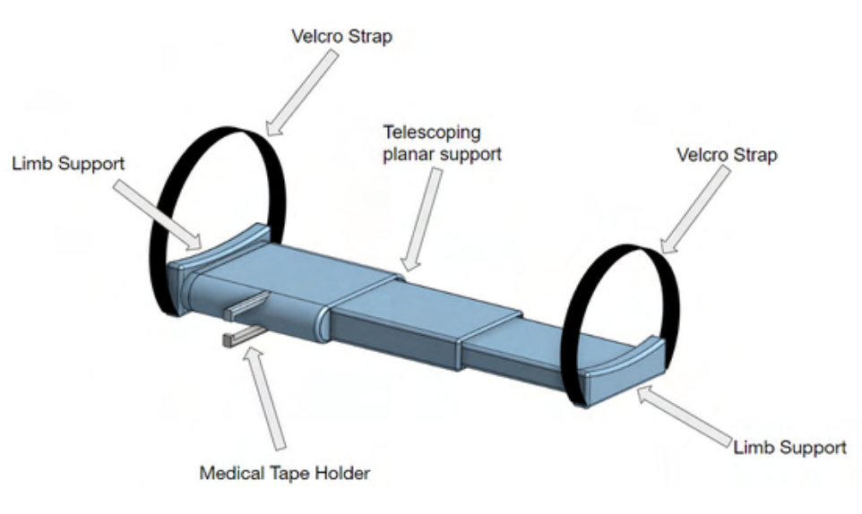CAD Model (collapsed):
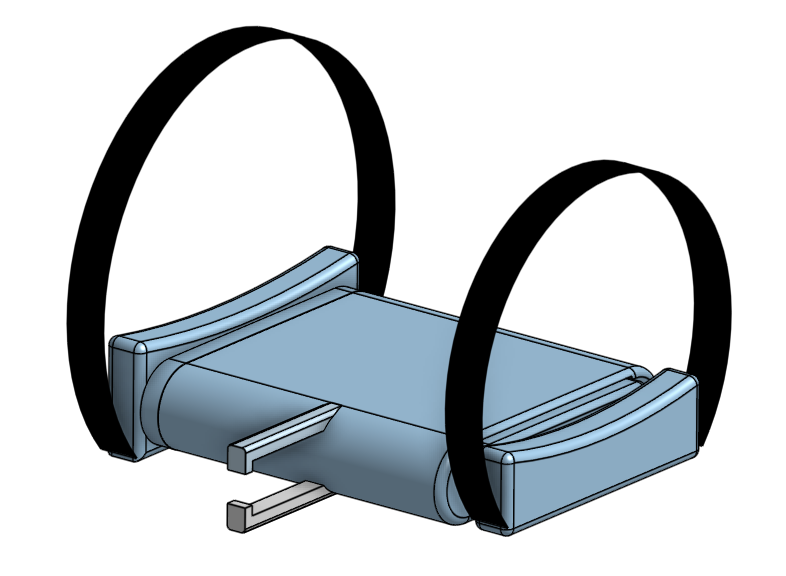First Prototype:
Challenges:
The biggest challenge of this project was manufacturing the telescoping mechanism. Since the device is 3D printed out of PLA, there were some tolerancing issues, which required the parts to be sanded to make them telescope without too much friction.
Result:
When my team presented this device, it was well received by our peers and professors, as well as hiking and skiing enthusiasts who we interviewed. We were able to demonstrate how easily this device works and the impact it can have.
Improving Pickup Truck Aerodynamics
The Problem:
Currently, light duty trucks (pickup trucks) have a median efficiency of 17 miles per gallon, compared to 30.9 miles per gallon(MPG) for the average sedan. Light duty vehicles, including pickup trucks, account for 58% of vehicle emissions due to their popularity and inefficiency. This makes them responsible for a large amount of greenhouse emissions, contributing to increased global warming. One cause of the poor efficiency of the pickup truck is its subpar aerodynamics. A more aerodynamics truck will use less gas and have a greater range. In addition, it would bear a lower running cost with its increased efficiency, encouraging more consumers to buy a pickup truck. From an environmental perspective, the top three best-selling vehicles in the USA were all pickup trucks, netting over 1.3 million units sold [6]. Thus, even small improvements in the efficiency of their design would make a significant difference in the amount of fuel being used overall.
Skills Used: Aerodynamics · Computer-Aided Design (CAD) · Research · Project Management · Design · CFD
Boxfish Curvature:
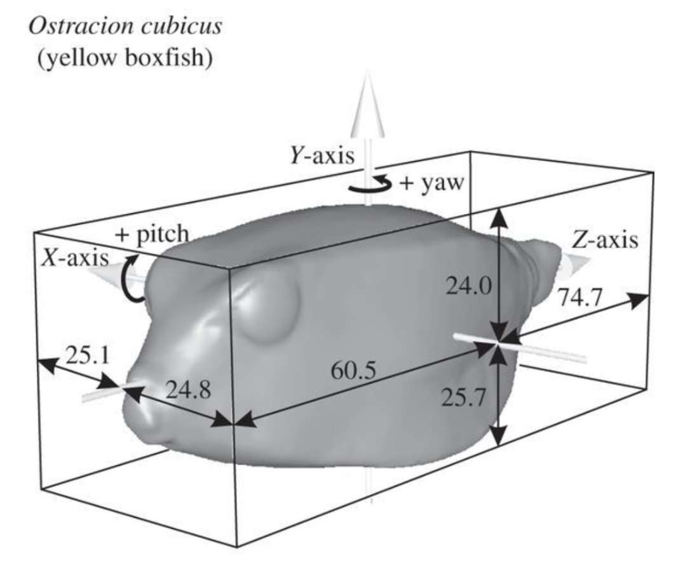How It Works:
To fix the aerodynamic issues, my team created a removable bed cover for the bed of the pickup truck, which is inspired by the aerodynamic shape of the Boxfish. With this removable bed cover, we woud effectively reduce the drag coefficient of the car at different speeds, improving the efficiency. Prototypes were created and tested in both CFD simulations and in a wind tunnel. The simulations were done using STAR-CCM+, and provided both quantitative data on the drag force acting on the car, as well as streamline figures that were used to nalyze areas of improvement (wanted streamlines to smoothly curve around the car without sharp bends or sudden changes in direction and no flow separation). In order to validate our digital testing, we physically tested our prototypes (3D printed on miniaturen scale) using the Wind Tunnel available at The Cooper Union. We created a mounting procedure that would allow us to measure drag on the prototypes using a scale and L bar, as the lab did not have sensors available to measure the force.
Pickup Truck Streamline Diagram (No Bed Cover):
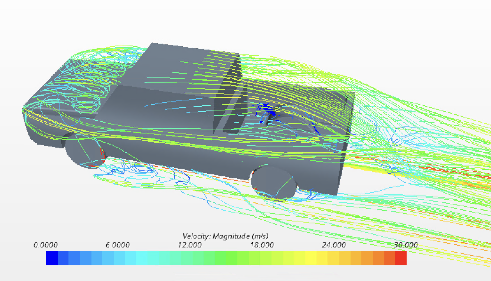Pickup Truck Streamline Diagram (With Bed Cover):
Testing Rig:
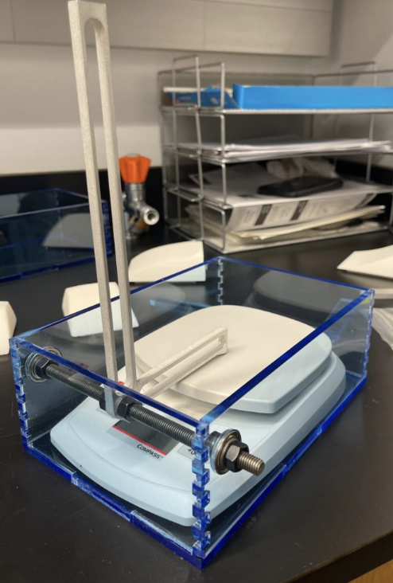Final Prototype:
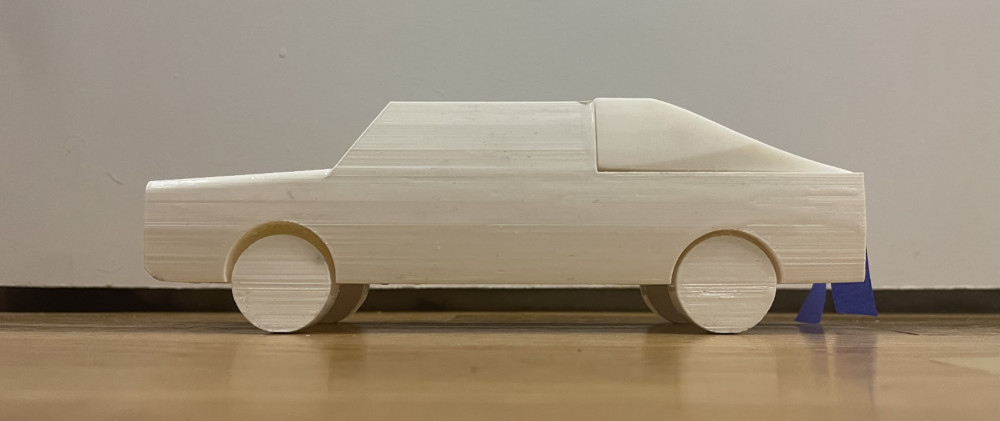Wind Tunnel Testing:

Challenges:
The hardest part of this project was learning how to use the STAR-CCM+ software. Our team needed much help throughout the process from those knowledgable of this topic to construct our simulations properly, as their were many intricate steps to remember for constructing the simulation properly.
Results:
Our real-world and simulation results were very similar, and our final prototype performed the best, reducing the drag coefficient of the car by approximately 8%. Reducing drag by up to 8% leads to an increase of 1.5 miles per gallon (surpassing the initial goal of 0.4 mpg) and saves consumers an average of $2,000 over the lifespan of the truck, a nice little reward for helping the planet!
Telescopic Arm Climbing Device
The Problem:
In the 2020 FIRST FRC Robotics Competition, robots were given tasks to complete for points, one of which was to climb up on a pole approximately 5 feet in the air, without falling down. This competition was shut down due to the COVID-19 pandemic, with our initial design being a scissor lift climber, which could have used much improvement. Thus, the goal of this project was to improve on the current climbing mechanism if the competition was to be rescheduled for the future.
Skills Used: Computer-Aided Design (CAD) · Research · Design
2020 FIRST FRC Game Walkthrough:
How It Works:
I devised a telescopic arm design as a better alternative, where two arms would extend up and lift the robot off the ground. The arm consists of 3 telescoping PVC pipes, with a hook on the top. A spool of spring steel is fed into innermost PVC pipe, so when it is unspooled the arm will extend upwards. I chose spring steel for this design due to its combination of rigidity and maleability, thus making it strong enough to lift the pipes and still be able to be spooled. The entire mechanism is powered by a single Falcon 500 motor, which is directly connected by gears to two wheels, which help feed the spring steel up into the PVC pipe. In addition, the motor is able to directly unspool the wheel with sprockets that connect one of the wheels to the spool itself. In addition, the entire mechanism mounting for the robot was designed, and the correct calculations for proper gear ratios and torque needed to lift the 120 robot were determined. Lastly, a ratchet mechanism is employed on the motor to prevent fallback as the robot is raised up, and is activated by a small piston.
CAD Model:
Spool Housing Closeup (Front View):
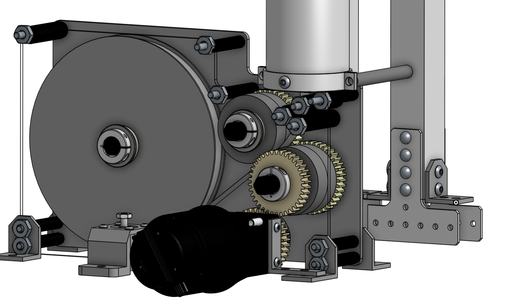Spool Housing Closeup (Back View):
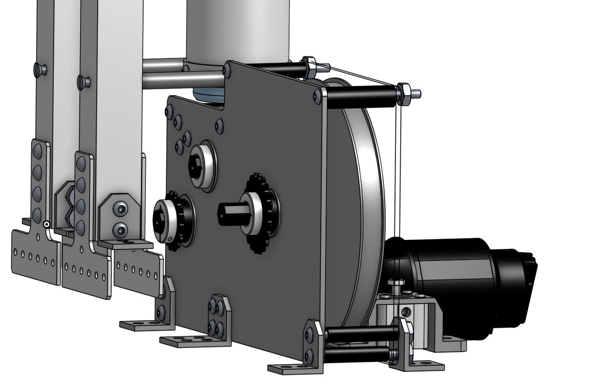Challenges:
The biggest challenge was theoretically calculating if this device will work, and seeing its limitations. At the time of this project, I was still in high school, so a lot of these concepts were fairly new to me, so I had to do a lot of research to figure out how to calculate gear ratios and torque.
Results:
Unfortunately, this project never came to fruition, as the robotics competition was never rescheduled during the pandemic. However, this was a great learning experience for me, as I was able to greatly improve my CAD skills, and have a better grasp of the engineering design process.